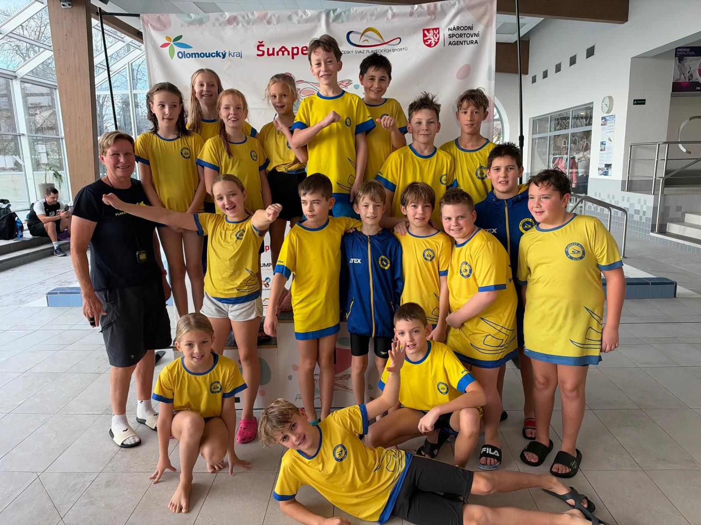

Zlínské plavecké naděje zářily v Prostějově
Výprava si veze domů smršť osobních rekordů.
Prostějovský pětadvacetimetrový bazén hostil v sobotu 7. listopadu 2026 tradiční plavecké Trojutkání klubů PoPro, UnOl a Zlín. Plavecký klub Zlín vyslal 69 závodníků a závodnic.
Mladí plavci a plavkyně ukázali obrovskou bojovnost, výbornou technickou připravenost a skvělou formu. Výsledkem bylo velké množství nových osobních rekordů. Závody potvrdily, že zlínskému mládežnickému plavání roste silná generace.
Všem plavcům děkujeme za příkladnou reprezentaci klubu a gratulujeme k novým osobním rekordům.
Trenéři PK Zlín: A. Martinková, B. Kalendová, M. Škubalová, J. Čagánek

Ke stažení
Další aktuality
Krajský přebor 10 a 11letého žactva, Šumperk
O víkendu 14. a 15. 11. 2026 se naši plavci ročníků 2016 a 2015 zúčastnili krajského přeboru OLK a ZLK. Za klub startovalo 23 mladších žáků a žaček.

Soustředění sportovních tříd v polském Szczyrku
Fotky ze soustředění najdete v galerii na Rajčeti.
Fotogalerie na Rajčeti
Prázdniny, neplaveme!
O podzimních prázdninách od středy do pátku 28. až 30. 10. 2026 se v Přípravce ani v Klubovém plavání neplave. Užívejte dnů volna.